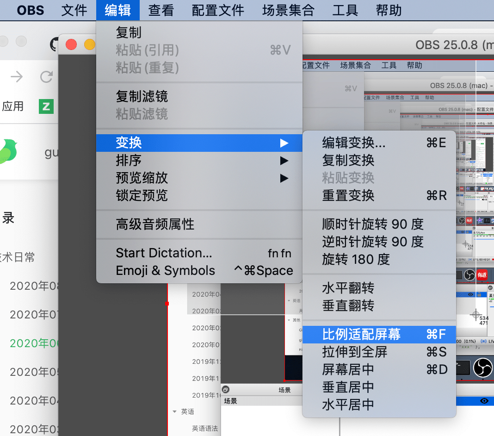
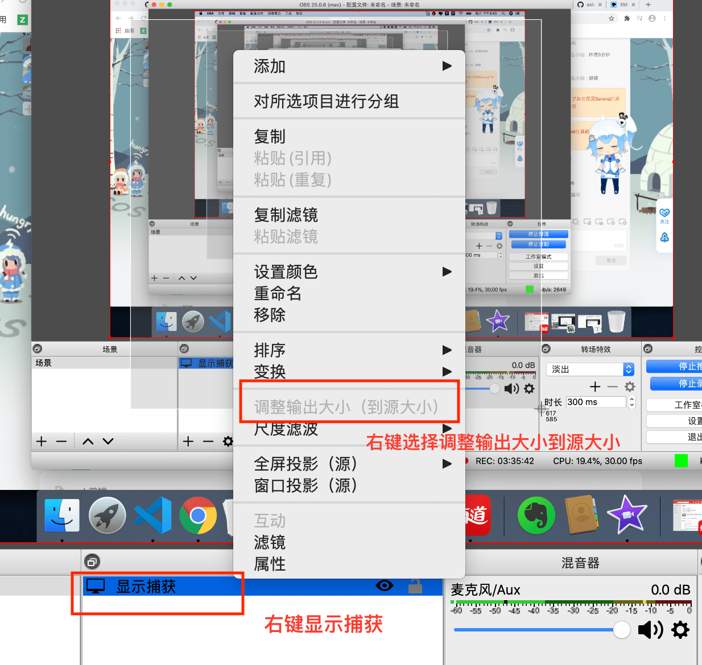
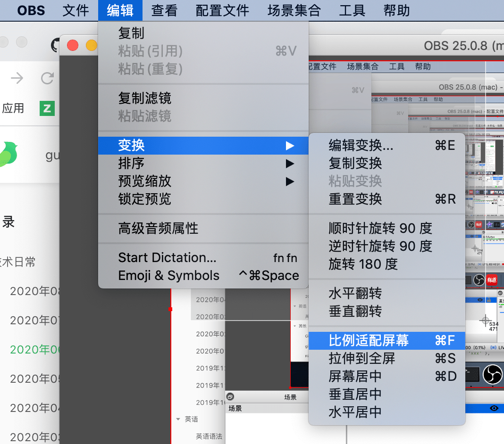
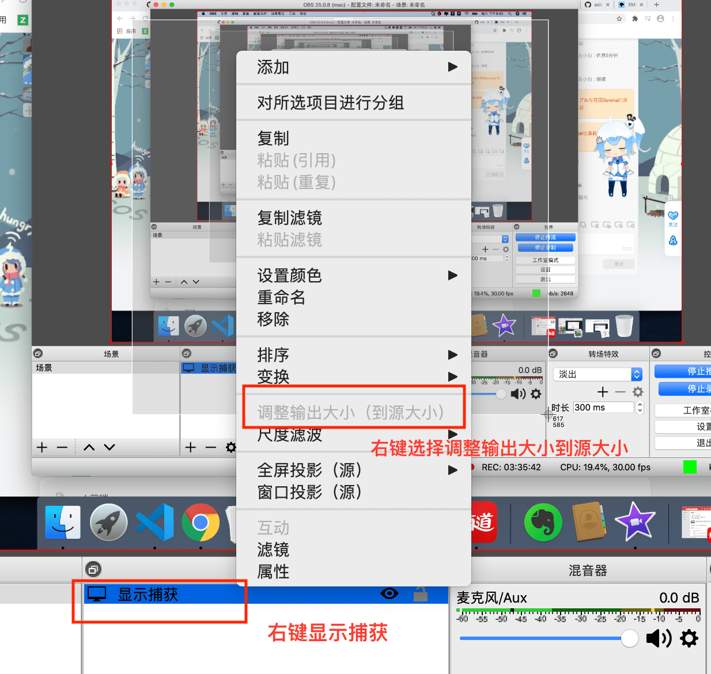

2020/09/12
Author: guoqzuo
obs录制视不是全屏、录制视频模糊的问题
obs录制视不是全屏的问题
解决方法：打开OBS => 点击顶部 "编辑" 按钮 => 选择 "变换" => 点击比例适配屏幕

obs录制视频模糊的问题
解决方法，右键显示捕获，选择调整输出大小到源大小，正常情况下是可以点击的。这里因为我已经设置了，且正在推流、录制，就是灰色的了。

解决方法：打开OBS => 点击顶部 "编辑" 按钮 => 选择 "变换" => 点击比例适配屏幕

解决方法，右键显示捕获，选择调整输出大小到源大小，正常情况下是可以点击的。这里因为我已经设置了，且正在推流、录制，就是灰色的了。
